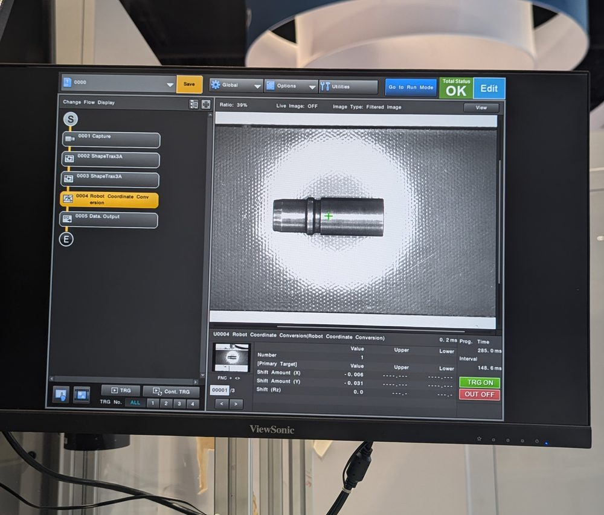
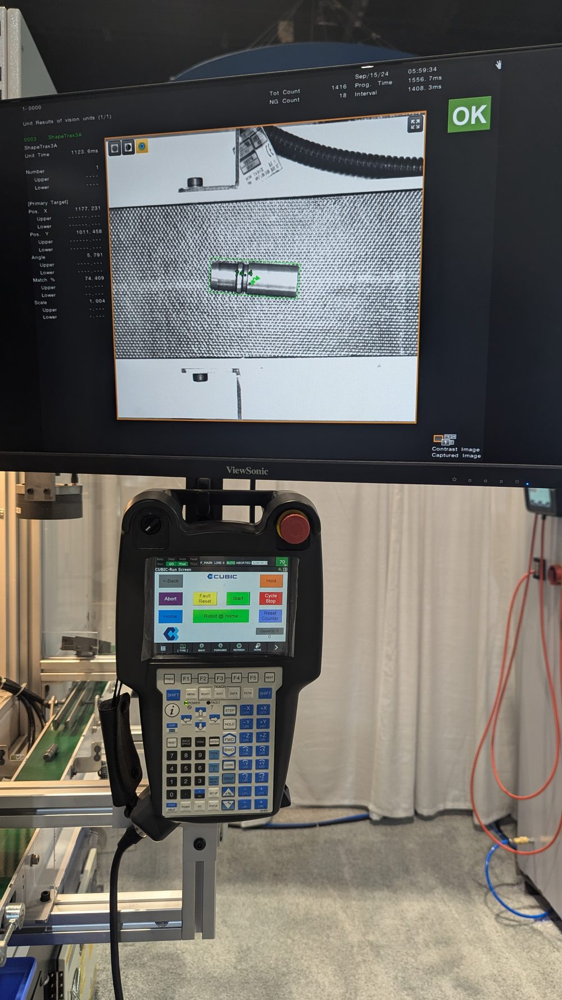
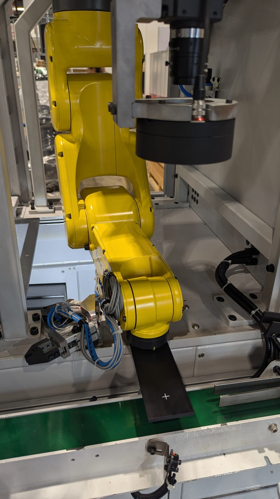
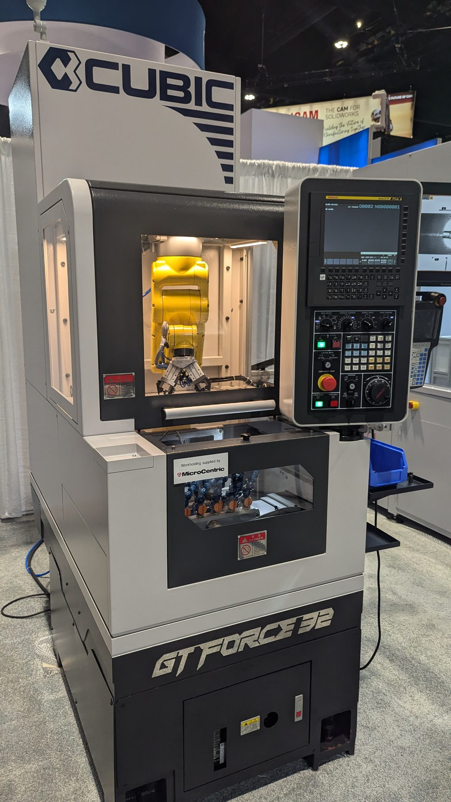
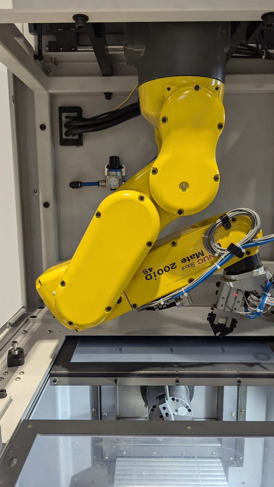

Vision-Guided Machine Loading
Machine-mounted robot loader for a gang-tool CNC lathe.
A compact automatic loading system built onto a Cubic GT Force-32 gang-tool lathe: a machine-mounted FANUC LR Mate picks blanks from a vision-guided conveyor, loads and unloads the collet in a single trip, and runs from an operator screen that needs no robot programming. Exhibited publicly at IMTS 2024 in Chicago.
Problem
Shops running secondary lathe operations lose margin to hand loading — an operator stands at the machine feeding one blank at a time, and the spindle idles between parts. Automating it usually means a floor-standing robot cell that costs more than the lathe and consumes floor space the shop does not have.
The design problem was to put a robot on the machine rather than beside it, keep the footprint close to that of the bare lathe, and make it something a machinist — not a robot programmer — can run and change over.
Architecture
- A FANUC LR Mate 200iD/4S mounted in a guarded enclosure directly above the work zone, so the loader travels with the machine instead of occupying separate floor space.
- An infeed conveyor presents blanks loosely rather than in a precision fixture, removing the need for a hard-tooled tray for every part number.
- A fixed overhead Keyence camera locates each blank on the belt and converts the result into a robot frame offset, so the robot picks from where the part actually is.
- A dual pneumatic gripper carries a finished part out and a blank in on the same entry, cutting the number of moves into the collet in half.
- Robot, CNC, and PLC exchange state through interlocked signals covering chuck open/close, cycle start, door and guard status, and part-present confirmation.
- Operator control lives on a custom run screen on the teach pendant, so normal production never requires entering robot programming.
Vision-Guided Picking
The vision program is deliberately short and inspectable: capture, two ShapeTrax pattern matches, a robot coordinate conversion, and a data output step. The conversion stage is what makes the loose-conveyor approach work — it turns a pixel-space match into an X, Y, and Rz shift the robot applies to its pick position, so the same taught path handles parts that land anywhere in the camera's field.
Keeping the flow to five steps was a maintenance decision as much as a technical one. A short program is one a customer's own technician can open, read, and re-teach for the next part family.

Operator Interface
The pendant run screen exposes exactly the actions a machinist needs during a shift — start, hold, cycle stop, abort, fault reset, send robot home, reset counter — and a home position indicator that answers the first question anyone asks after a fault: is the robot actually clear of the machine?
Everything else stays behind the standard FANUC interface. The screen is a deliberate narrowing: fewer choices during production means fewer ways to put the robot somewhere the recovery logic did not expect.


Contribution
I was the controls and robotics engineer for the automation package: robot program structure and motion, EOAT selection and pneumatics, vision setup and calibration, the robot-to-CNC and robot-to-PLC interface, safety configuration, the operator run screen, and commissioning and demonstration of the system on the show floor.
The GT Force-32 lathe itself is a Cubic Machinery product; my scope was the loading system built onto it and the integration between the two.
The tradeoff
The tempting version of this system uses a precision infeed fixture and no camera: cheaper on paper, faster to prove out on one part. It also makes every new part number a tooling project.
Spending the cost and calibration effort on vision instead moved the changeover from the machine shop to the operator screen. That is the trade that makes a loader worth buying for a shop with a mix of short runs, and it is the reason the same machine could run different demo parts through a week-long show without retooling.
The Machine


Photographs taken at the Cubic Machinery exhibit, IMTS 2024, Chicago — a public trade show. No customer names, customer parts, or proprietary process data appear in this case study.